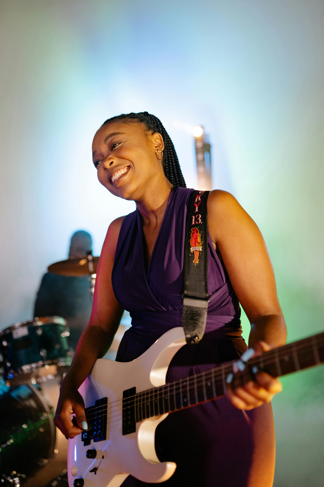
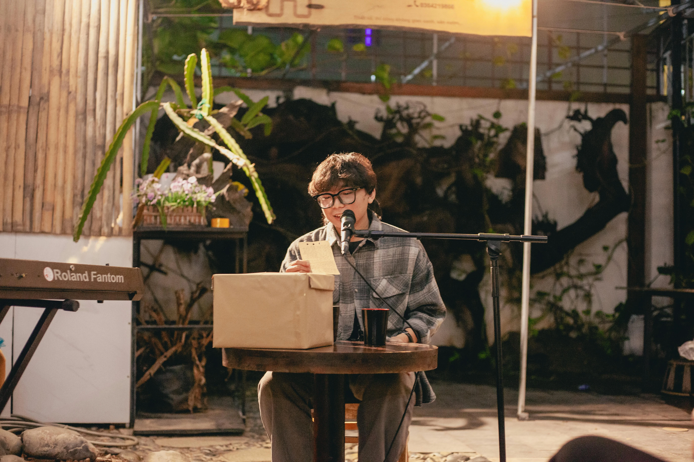
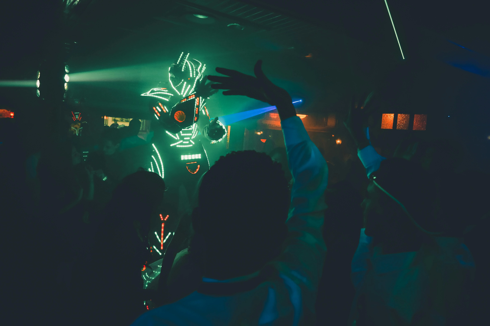

Work / Event Marketing
USC Capstone — Live Music Experience
An immersive event marketing campaign built around the feeling of live music — capturing authentic audience emotion and artist storytelling to build brand affinity through shared experience.
01 — The Premise
Music is the most honest marketing there is.
The USC Annenberg capstone challenged us to design a real event marketing strategy from concept to execution. The question I kept coming back to: what if the event itself was the brand story? Live music creates moments of collective feeling that no ad campaign can fake. That's where we started.

02 — The Performers
Artists who bring something real to the room.
We curated a multi-format lineup — intimate acoustic sets, electronic DJs, full bands — designed to draw different audience segments into the same shared space. The goal wasn't scale. It was depth of feeling. An audience member who cries at a show remembers the brand.

03 — The Production
Every visual detail is part of the story.
From the LED-lit crowd moments to the intimate café performances, each production element was designed to be photographed, felt, and remembered. The performer on the Roland keyboard in an open café setting — that's not a secondary act, that's the brand's warmth made physical.

04 — The Crowd
The audience is part of the content.
An LED robot costume performer moving through the crowd. Bodies pressed together watching a stage. These aren't just event photography moments — they're proof of concept. When the audience becomes part of the visual story, they're no longer just attendees. They're ambassadors.

The campaign in motion.
18 clips captured across the full event experience — from opening DJ set to final encore. Each clip was edited for social-native formats (vertical, short, high-energy) and long-form brand storytelling.
Establishing shot
Concert crowd energy
DJ performance
Guitar performance
B&W vocal moment
Café performance
Attendee dancing
DJ mixing close-up
Violin performance
Trumpet performance
Band outdoor set
Full-venue overview
Microphone close-up
DJ board detail
DJ from behind
Couple at the show
Club crowd — red light
Crowd rush moment